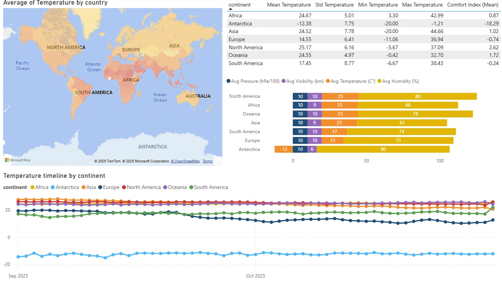

Global Capitals Weather Insight
Python
Power BI
Project Overview
I found an interesting real-time weather dataset on Kaggle which contains 6-hourly data from 252 world capitals.
Using Python I cleaned and explored the data, and with Power BI, I built an interactive dashboard that highlights temperature trends and climate differences across continents.
Analytical Questions
- Which regions show the highest and lowest temperature in the dataset?
- How do humidity, visibility, and pressure vary across continents?
- Which regions offer the best comfort index relative to their actual temperature?
- How does temperature change by time?
General Data Description
- Dataset size: 6-hourly data
- Date/data range: Sep - Oct 2025
- Main columns: continent, temperature, visibility, humidity, Comfort Index
- Units: °C, %, km, hPa
Load the dataset
import pandas as pd, numpy as np
pd.set_option('display.max_columns', None)
pd.set_option('display.expand_frame_repr', False)
path=....
df=pd.read_csv(path)
print(df.head(3))
utc_time local_time country capital continent temperature
0 2025-09-01 00:00:00 2025-09-01 04:00:00 Abkhazia Sukhumi Unknown 22.15
1 2025-09-01 06:00:07 2025-09-01 10:00:07 Abkhazia Sukhumi Unknown 26.83
2 2025-09-01 12:00:02 2025-09-01 16:00:02 Abkhazia Sukhumi Unknown 29.20
Light EDA
print(df.info())
class'pandas.core.frame.DataFrame'
RangeIndex: 60732 entries, 0 to 60731
Data columns (total 24 columns):
# Column Non-Null Count Dtype
--- ------ -------------- -----
0 utc_time 60732 non-null datetime64[ns]
1 local_time 60732 non-null object
2 country 60732 non-null object
3 capital 60732 non-null object
4 continent 60732 non-null object
5 temperature 60732 non-null float64
6 temp_min 60732 non-null float64
7 temp_max 60732 non-null float64
8 humidity 60732 non-null float64
Checking how much NaN value we have.
print(df.isna().sum().head(12))
utc_time 0
local_time 0
country 0
capital 0
continent 0
temperature 0
temp_min 0
temp_max 0
humidity 0
feels_like 0
visibility 37
precipitation 0
dtype: int64
Cleaning and Converting into CSV
#cleaning the data from the useless spaces
for col in ["country", "capital", "continent", "weather_main", "weather_description", "weather_icon"]:
if col in df.columns:
df[col] = df[col].astype(str).str.strip()
# the temperature should be within the range of -20 and +55
df["temperature"] = df["temperature"].clip(lower=-20, upper=55)
#clip our time into more usable form
df["utc_time"] = pd.to_datetime(df["utc_time"])
df["date_utc"] = df["utc_time"].dt.date
df["hour_utc"] = df["utc_time"].dt.hour
df[["utc_time","date_utc","hour_utc",]].head(3)
#filling up the missing values
df["visibility"] = df["visibility"].interpolate(method="linear")
One last percentile check, for getting rational data.
print(df[["temperature","humidity","visibility","cloudcover","pressure"]].describe(percentiles=[.25,.5,.75]))
temperature humidity visibility cloudcover pressure
count 60732.000000 60732.000000 60732.000000 60732.000000 60732.000000
mean 21.644209 71.709033 9534.611737 46.704983 1013.741306
std 8.335061 20.018523 1503.979509 35.996583 6.416767
min -20.000000 2.000000 21.000000 0.000000 956.000000
25% 16.420000 61.000000 10000.000000 20.000000 1011.000000
50% 23.900000 76.000000 10000.000000 40.000000 1013.000000
75% 27.620000 87.000000 10000.000000 75.000000 1017.000000
max 44.660000 100.000000 10000.000000 100.000000 1050.000000
df.to_csv(.....,index=False)
Data Visualization
Which regions show the highest and lowest temperature in the dataset?

- After importing the cleaned dataset into Power BI, I opened Transform Data to prepare the fields I needed for mapping.
- In Power Query, I grouped the data by the country column and created a new field called Avg Temperature, using the Average operation on the temperature column.
- After I saved the changes, I inserted a Map visual from the Visualizations panel and dragged country into the Location field the map could recognize the geographic areas.
- I added Avg Temperature into the Tooltips field so that hovering over each country displays its calculated average temperature.
- Finally, I changed the applied color scale, which allowed me to visually compare which countries and regions were warmer or cooler.
How do humidity, visibility, and pressure vary across continents?
- For my second chart I imported again the cleaned dataset, and opened Transform Data and Power Query Editor to prepare the fields needed for the bar chart.
- In Power Query, I grouped the data by the continent column and created new fields for each metric:
- Avg Temperature → Average of temperature
- Avg Visibility → Average of visibility
- Avg Pressure → Average of pressure
- Avg Humidity → Average of humidity
- Select Avg Visibility → Transform → Standard → Divide → value: 1000
- Select Avg Pressure → Transform → Standard → Divide → value: 100
- Renamed the columns to Avg Visibility (km) and Avg PRessure (hPa/100) and set the data type to Decimal Number.
- I saved the changes with Close & Apply so the new aggregated columns appeared in the main model.
Which regions offer the best comfort index relative to their actual temperature?
- For my table, after inserted my resource dataframe again, I created some DAX measures:
- Mean Temperature = AVERAGE( Capital_Weather[temperature] )
- Std Temperature = STDEV.S( Capital_Weather[temperature] )
- Min Temperature = MIN( Capital_Weather[temperature] )
- Max Temperature = MAX( Capital_Weather[temperature] )
- I also defined a simple Comfort Index (Mean) measure to compare how comfortable the weather feels:
- Comfort Index (Mean) = AVERAGEX( Capital_Weather, Capital_Weather[feels_like] - Capital_Weather[temperature] )
- After creating and saving the measures, I dragged the continent column into the Values field of the Table visual so each row represents one continent and then I added the new, created measures.
- Finally I added the new measures to the same Table visual as additional columns.
How does temperature change by time?
- For my time-based line chart I opened Transform Data → Power Query Editor to prepare the time-based columns needed for weekly smoothing.
- I selected the local_time column and created a date-only version using:
- New Column → Date → Date Only, then renamed it to local_date.
- To reduce day-to-day noise, I added a weekly grouping column:
- For weekly trends: New Column → Date → Week → Start of Week → renamed to week_start.
- After creating the time buckets, I clicked Close & Apply so the new fields became available in the report view.
- In the Report view, I inserted a Line chart from the Visualizations panel, dragged week_start to the X-axis and temperature to the Y-axis and changed the aggregation to Average.
- I placed continent in the Legend field so each continent gets its own line in the chart. (plus I removed the automatic Date Hierarchy that Power BI adds by default.)
- Finally, I renamed the visual to: “Temperature Timeline by Continent (Weekly)”
I merged and putted my visualizations together on a dashboard which finally looks like this:
